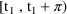
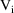
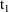
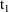
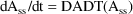
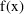
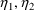

.
.In this chapter we describe data items required by PREDPP. The reader should be familiar with chapter II before proceeding with this chapter.
Use of PREDPP requires that each data record contain certain NONMEM data items, i.e. data items needed by NONMEM. These are the ID and MDV data items (see chapter II). The MDV data item is required because with PREDPP not all data records will contain observations, and when MDV data items appear, so must the ID data items (even with single-subject data).
Use of PREDPP also requires that
each event record contain two data items which are needed by
it, i.e. these data items are examined by PREDPP, but not by
NONMEM. These are the time (TIME) and the event
identification (EVID) data items. Depending on the EVID data
item in an event record, PREDPP also requires that the event
record contain certain additional data items. Depending on
some one of these additional data items in an event record,
further additional data items may be required in the event
record. Lastly, certain data item types are recognized
PREDPP, though their use is not required e.g. the CONT data
item. The CONT data item was discussed in Chapter II; it
allows an event record to span several data records. It is a
little different from the other types of data items needed
by PREDPP because if it appears, it must appear in all data
records of an event record. Each other type of data item
needed by PREDPP need appear only in the last data record of
an event record.†
----------
† The CONT data
item described in this paragraph cannot be used with NM-TRAN
abbreviated code. It is not needed because the number of
data items per data record can be made as large as needed.
See the discussion of PD and $SIZES in Chapter II.
----------
There are 11 different types of data items altogether that are recognized and acted on by PREDPP. These are called the PREDPP data items
Any particular type of PREDPP data item may appear in any field of a data record, as long as for a given type, the same field is used in each data record containing data items of this type. If a PREDPP data item type appears in the data set, its field number, or index
is communicated to PREDPP in a way described next. Otherwise, it is said to be missing
The index of the Ith type of data item should be placed in the Ith field of the INDEX control record, which is the fourth control record. (Control records are discussed in Guide I, and the INDEX record, in particular, is discussed in section C.4.1 of that document.) If NM-TRAN is used, it is sufficient to place the reserved name of the data item in the nth position of the $INPUT record, where n is the field number. The effect of so doing is to place the index of the Ith type of data item in INDXS(I). The values in the INDXS array are available to the PRED subroutine. For example, the CONT data item is the 10th type of PREDPP data item. If, as in the example in Chapter II, the index of the CONT data item is 3, then 3 should be placed in the 10th field of the INDEX record, and in so doing, it is also placed in INDXS(10). If NM-TRAN is used, the name CONT is placed in the 3rd position of the $INPUT record.
Although this chapter describes the use of CONT, there is no need for it any longer.
If the Ith type of data item is missing, then the INDEX record would not contain its index, i.e. the Ith field of the INDEX record would contain either a zero or a blank. If NM-TRAN is used, the reserved name of the data item type would not appear in the $INPUT record. It is assumed that all data items of this type are 0 in all event records. If the CONT data item is missing, it is assumed that all data items of this type are 0 in all data records.
Indices of data items other than
PREDPP data items may be needed in a user-supplied PK,
ERROR, or INFN (see section VI.A) subroutine. This is
illustrated in section III.C. These indices may be placed in
the INDEX record beginning with field 12. In the
user-supplied subroutine they appear in the INDXS array
beginning with position 1 and in the order in which they
appear in the INDEX record. If NM-TRAN is used, the
labels of the data items may simply be placed in the $INDEX
record. In the user-supplied routine, the indices appear
in the INDXS array beginning with position 1 and in the
order in which the labels appear in the $INDEX
record.†
----------
† The INDXS
array cannot be used with NM-TRAN abbreviated code.
----------
Each of the different types of PREDPP data items, except the CONT data item, are discussed in turn in the next 10 sections. The CONT data item has already been discussed adequately in chapter II. The possible values for all 11 different data items types are summarized for the reader’s convenience in Appendix I.
This type of data item (PREDPP data item no. 1) must appear in event records. It identifies the type of event. It has 5 possible values.
A value of 0 indicates that the event is an observation event
With this type of an event the DV data item on the last data record of the event record is an observation, and the MDV data item on this data record is 0. With all other types of events, the DV data item on the last record of the event record may be any value (e.g. blank), and the MDV data item on this data record is 1.
A value of 1 indicates that the event is a dose event
There are 3 types of doses: a bolus dose, an infusion (of finite duration), and a (continuous) constant rate infusion considered to be of effectively infinite duration and leading to steady-state. This last type of dose is called a steady -state infusion
Repetitions of doses of the first two types can also lead to steady-state (see section F). A dose event corresponds to either the time a bolus dose is given, or the time an infusion is initiated, or the time a steady-state infusion terminates. With a dose event certain other data items which define the event further may also appear in the event record.
A value of 2 indicates that the event is neither an observation nor dose event. The corresponding event is referred to as an other-type event. Examples of other-type events are: the time a urine collection begins, the time a urine collection ends, and the time a change in a covariable (such as glomelular filtration rate) is noted. The user may create an other-type event for whatever reasons he wishes; he need only mark an occurence of this type of event with an event record containing an EVID data item equal to 2.
A value of 3 marks a reset event
With a reset event the kinetic system is reinitialized. Time is reset to whatever time appears in the event record (e.g. 0), the amounts in each compartment are reset to zero, and the on/off status of each compartment is reset to its initial status (see section H).
A value of 4 marks a reset-dose event
With such an event the characteristics of a dose event and a reset event are combined. The system is first reset, and then a dose is given according to the information given in those fields giving dose information (see below).
The "Repeated Observation Records" feature exists to assist in specialized methodologies such as stochastic differential equations. A record in a data file may be set up for repeated calls to PK and ERROR. Each time, the same record is passed to PK and/or ERROR, but with a different EVID. The user’s control stream model in $PK or $ERROR may then take advantage of executing certain code conditional on the EVID value. For this to occur, the user must introduce one or more of the following data items in the data file, with these names:
XVID1 XVID2 XVID3 XVID4 XVID5
These stand for "extra" EVIDs. On the first call to PK/ERROR, the EVID is set to the value given in XVID1. On the second call, the EVID is set to that in column XVID2, etc. up to XVID5. Only as many XVIDs as are required are needed to be defined. All the other items in the record do not change, except that if the present EVID used is not 0, then the MDV value is set to 1 for that call. If an XVID is -1, then the call to PK/ERROR for that XVID is not made, nor for the remaining XVIDs. If there is an EVID column, the value in this column is not passed to PK/ERROR unless XVID1=-1 in which case a "normal" call with that record occurs.
This type of data item (PREDPP data item no. 2) must appear in event records. It gives the time of the event. (An exception occurs with ADVAN9, ADVAN15, or ADVAN17 when there are only algebraic equations to be solved, in which case the time data item is optional.) With NONMEM 7.4, time data items may have any value, including negative values; with earlier versions, time data items must be non-negative. (NM-TRAN has always allowed negative clock times when day-time translation is performed, and converted them to non-negative relative times for PREDPP.) Also, event records must be ordered (within an individual record) so that if event record A is followed by event record B, and the corresponding times are and , then . Exceptions to this are provided by reset and reset-dose events where the time may be any number.
Note: when IDEF(1,2) is set to 0 in PK (see section III.H), and , then PK is not called with event record B unless a call is forced with the use of the CALL data item; see section J.
The PREDPP TIME data item is a unitless relative time. However, when NM-TRAN is used, TIME values of the NM-TRAN data set may contain clock times (e.g., hh:mm). The DATE data item may also be present. In these cases NM-TRAN performs date-time conversion, converting DATE (if present) and clock times to relative time for the NONMEM/PREDPP data record. In addition, the NM-TRAN $DATA record may contain the option TRANSLATE=(TIME/f/d). This requests that TIME values be divided by f (typically, f is 24 to convert hours to days, with d significant digits.
This type of data item (PREDPP data item no. 3) often appears in event records, but it need not appear. In a dose event record it gives the amount of a bolus dose or of an infusion of finite duration. This amount will be a positive number. However, if other data items in a dose event record (see below) indicate that the event record marks the termination of a steady-state infusion, then if the AMT data item appears, it must be 0. If all doses are steady-state infusions, then the dose amount data item can be missing.
If the AMT data item appears, then it must be 0 in observation, other-type, and reset event records. In a reset-dose event record the AMT data item should satisfy the requirements of the AMT data item in a dose event record.
This type of data item (PREDPP data item no. 4) often appears in dose event records, but it need not appear. For example, if all doses are bolus doses, then the dose rate item can be missing. In a dose record the RATE data item can assume 4 different kinds of values. A positive number indicates an infusion rate. The appearance of a positive AMT data item in the event record, giving the amount of the infusion, indicates that the infusion is of finite duration.
A 0 indicates that the dose is an instantaneous bolus dose. A -1 indicates that the dose is either (i) a zero-order bolus dose (see section III.F.3) and that its rate is modeled in PK (see section III.F.4) or (ii) a rate-modeled steady-state infusion (see section III.F.5). A -2 indicates that the dose is a zero-order bolus dose and that its duration is modeled in PK (see section III.F.3). If the dose is a zero-order bolus dose, then a positive AMT data item must appear in the event record.
The RATE data item must be 0 in observation, other-type, and reset event records. In a reset-dose event record the RATE data item should satisfy the requirements of the RATE data item in a dose event record.
(NOTE: Steady-state kinetics as
described in this section cannot be used with some systems
of differential equations. This includes delay differential
equations and also other systems, for example, those in
which there is a change in kinetics outside the dosing
interval. With NONMEM 7.5, an Empirical method of Achieving
Steady State may be used. This method does not use the SS
data item, but does use ADDL and II.
See INTRODUCTION TO NONMEM 7, section "An Empirical
Method of Achieving Steady State"
Before giving the detailed description of this data item, it is helpful to give some considerable background concerning steady-state and its relationship to PREDPP.
Steady-state in a kinetic system can be achieved in several ways. One way is by administering a sequence of doses in a regular cyclic fashion over a sufficiently long time. The doses may be input into the same or different compartments. The doses given during any one cycle are the same as the doses given during any other cycle; collectively, they are called the dose cycle
They may consist of a mixture of bolus doses and infusions of finite duration. A first cycle of doses is given, then a second cycle, etc. until a steady-state has been reached. For example, a dose cycle may consist of an instantaneous bolus dose of 10mg, immediately followed by a 30 minute infusion of 10mg. This cycle might be repeated every 4 hours, the so-called period of the cycle. Let denote the period, and suppose the dose times of the last cycle are . The system is at steady-state at a time t in the (closed-open) interval  if the drug amounts in the compartments at time t equal the amounts at time , were the dose times of the last cycle actually (and there were no event times in the interval ).
A second way to achieve steady-state is to initiate a number of simultaneous steady-state infusions. Suppose these infusions terminate at times . The system is at steady-state at a time t in the interval if for a positive , the drug amounts in the compartments at time t equal the amounts at time , were the infusions actually terminated at . A third way is to use a regular cyclic dosage pattern in conjunction with simultaneous steady-state infusions. Steady-state is an ideal state, but it can be approximated.
If a large enough number of dose cycles have occurred, the user might consider that an (approximate) steady-state has been reached by at least the time the last cycle begins. Rather than include a large number of dose event records into the data set, the user may be able to take advantage of a PREDPP feature requiring that only dose records for the doses in the last cycle be given. This last dose cycle is called the steady-state cycle
and the doses in this cycle are called steady-state doses
If steady-state infusions are involved, only dose records marking their terminations are required. These special dose event records are called steady-state dose records
They are identified as such by means of the steady-state data item (see section F.2). A steady-state dose record describing a bolus dose or an infusion of finite duration actually describes an sequence of doses all just alike, given regularly at a specified interdose interval, and ending with the steady-state dose. All these doses, excluding the steady-state dose, are called the implied doses
Without loss of generality the sequence of times at which the implied doses are given is imagined to extend infinitely backward in time (beyond the first event time). These times are called the implied dose times
A steady-state infusion is
imagined to have started at
.
The amounts of drug in the various compartments are computed by PREDPP to be at their steady-state values at the time of the last dose of a steady-state cycle, or at the latest termination time of a group of simultaneous steady-state infusions, but not before this time. PREDPP computes these steady-state values by using steady-state kinetic formulas in conjunction with the usual transient type kinetic formulas. This computation is called the steady-state computation
Computation with steady-state dose records and steady-state formulas takes less computer time than does computation with transient dose records and transient kinetic formulas. So when the former can be incorporated, substantial computer time, as well as data set construction time, can be saved.
Steady-state can be achieved in linear kinetic systems and sometimes in nonlinear kinetic systems. With linear systems the full range of steady-state dosage patterns can be implemented with PREDPP; with nonlinear systems, only a limited range of steady-state dosage patterns can be implemented. In linear systems the so-called superimposition principle holds. This principle implies that if steady-state is achieved with a dose cycle of m doses, with period , then the amount of drug in a compartment at steady-state and at a given time t is , where is the amount of drug in the compartment at time t that would be present using a dose cycle consisting of only the ith of the m doses and with period . PREDPP takes advantage of this in a way that may be explained by means of the following example.
Suppose the dosage pattern -- 3 doses daily: 20 mg at 8 AM, 10 mg at 3 PM, and 10 mg at 8 PM -- is given, and steady-state is reached. The dose cycle could consist of the 8 AM dose, followed by the 3 PM dose, followed by the 8 PM dose. However, a steady-state solution is valid if a dosing pattern has continued for a sufficiently long time, and if valid, it is independent of when this pattern was initiated. So alternatively, the dosing cycle could consist of the 3 PM dose, followed by the 8 PM dose, followed by the 8 AM dose. Or, it could begin with the 8 PM dose, but in any case, the order of the doses should be chronological within a cycle, so that, for example, the 8 PM dose should not be followed by the 3 PM dose. Which of the 3 alternatives to choose is simply a matter of user strategy. To help explain this, suppose an observation is made at 4 PM March 9 and that the dosing cycle is given many days preceding March 9 and continuing beyond this date. The steady-state computation occurs only at the time of the last dose of the steady-state cycle (although, as shall be seen, partial steady-states are computed at earlier dose times). If the steady-state computation does not occur before 4PM March 9, dose records accounting for all the doses given before this time must be included in the data set. So, to take advantage of the steady-state feature, a steady-state cycle must end before 4 PM March 9. If a dose cycle is defined to begin with the 8 AM dose, then the steady-state cycle must end at 8 PM March 8 or earlier. Say it ends at 8 PM March 8; then non-steady-state dose records at 8AM and 3 PM March 9, accounting for the two doses given at these two times, must also be included. If, though, a dose cycle is defined to begin with the 8 PM dose, then the steady-state cycle can end at 3 PM March 9, and no nonsteady-state dose records need be included between the 3 PM March 9 dose record and the 4 PM observation record. Suppose then that one chooses this more efficient strategy.
Then a steady-state dose record
at time 8 PM March 8 appears. This record should specify
that the amounts in all the compartments be reset to the
steady-state amounts that would result were only 10 mg given
daily, 8 PM March 8 being the time of the last such dose (
 amounts at 8 PM March 8). There is a way to do this using
the steady-state data item. There should also be a
steady-state dose record at time 8 AM March 9. This record
should specify that (i) the amounts in all compartments be
updated to amounts valid for 8 AM March 9, using transient
type kinetic formulas (
amounts at 8 AM March 9), and that (ii) they then be changed
by adding to them the steady-state amounts that would result
were only 20 mg given daily, 8 AM March 9 being the time of
the last such dose (
amounts at 8 AM March 9). There is a way to do this using
the steady-state data item. Finally, a steady-state dose
record at 3 PM March 9 should be included, specifying that
(i) the compartment amounts be updated to amounts valid for
3 PM March 9 (
amounts at 3 PM March 9) and that (ii) they then be changed
by adding to them the steady-state amounts that would result
from a daily 10 mg dose, 3 PM March 9 being the time of the
last such dose (
amounts at 3 PM March 9). At 3 PM March 9 the compartment
amounts are thus set to their correct steady-state values.
If a number of additional dosing cycles occur after 4 PM
March 9 and before the next non-dose event record, then
similarly, the user can minimize the total number of
required dose event records by including steady-state dose
records before this next record.
amounts at 8 PM March 8). There is a way to do this using
the steady-state data item. There should also be a
steady-state dose record at time 8 AM March 9. This record
should specify that (i) the amounts in all compartments be
updated to amounts valid for 8 AM March 9, using transient
type kinetic formulas (
amounts at 8 AM March 9), and that (ii) they then be changed
by adding to them the steady-state amounts that would result
were only 20 mg given daily, 8 AM March 9 being the time of
the last such dose (
amounts at 8 AM March 9). There is a way to do this using
the steady-state data item. Finally, a steady-state dose
record at 3 PM March 9 should be included, specifying that
(i) the compartment amounts be updated to amounts valid for
3 PM March 9 (
amounts at 3 PM March 9) and that (ii) they then be changed
by adding to them the steady-state amounts that would result
from a daily 10 mg dose, 3 PM March 9 being the time of the
last such dose (
amounts at 3 PM March 9). At 3 PM March 9 the compartment
amounts are thus set to their correct steady-state values.
If a number of additional dosing cycles occur after 4 PM
March 9 and before the next non-dose event record, then
similarly, the user can minimize the total number of
required dose event records by including steady-state dose
records before this next record.
A slightly more general application of the superimposition principle allows "transient doses" to be handled along with those of a steady-state dosing cycle. If, for example, a 20 mg dose was given (perhaps inadvertantly) at 3PM March 5, then, in effect, an extra dose of 10 mg was given on March 5 which cannot be properly taken into account in the steady-state cycle. However, the user may firstly, include a nonsteady-state dose record for 3 PM March 5 with dose amount 10 mg and then, specify on the steady-state dose record for 8 PM March 8, that (i) the compartment amounts be updated to amounts valid for 8 PM March 8 and that (ii) they then be changed by adding to them the steady-state amounts corresponding to the 8 PM dose.
The superimposition principle
also implies that if steady-state is achieved with a number
(n) of steady-state infusions, then the amount of drug in a
compartment at steady-state and at time t is
, where

is the amount of drug in the compartment at time t that
would be present were only the ith infusion given. If n=2,
for example, then 2 steady-state dose records should be
used, each containing a positive dose rate data item. The
times on these records should be the times
 and
and
 when the first and second infusions terminate. We will
suppose
. The first dose record may specify that the compartment
amounts at

be reset to the steady-state amounts corresponding to the
first infusion (
amounts at
when the first and second infusions terminate. We will
suppose
. The first dose record may specify that the compartment
amounts at

be reset to the steady-state amounts corresponding to the
first infusion (
amounts at
 ). The second dose record should specify that (i) the
compartment amounts be updated to amounts valid for time
). The second dose record should specify that (i) the
compartment amounts be updated to amounts valid for time
 (
(
 amounts at
amounts at
 ) and that (ii) they then be changed by adding to them the
steady-state amounts corresponding to the second infusion (
amounts at
). Note that
may equal
) and that (ii) they then be changed by adding to them the
steady-state amounts corresponding to the second infusion (
amounts at
). Note that
may equal
 .
.
We have discussed repetitive
doses leading to a steady-state in terms of a dose cycle
with a period. Indeed, repeated doses of possibly different
amounts are often given in a cyclic manner. However, the
only really important structure of repeated dosing, allowing
the application of the superimposition principle as
described above, is that there be a group of doses of
possibly different amounts, each of which is repeated with
its own constant period. So using the above example, the 20
mg dose is given repeatedly with a period of 24 hours, the 3
PM 10 mg dose is given repeatedly with a period of 24 hours,
and the 8 PM 10 mg dose is given repeatedly with a period of
24 hours. If, though, the values of these three periods
differed, a type of steady-state would still be achieved. As
before, one could simply include one steady-state dose event
record for each type of dose. For each type of dose, its
steady-state dose record would have a time data item equal
to the time the last dose of that type is given and a period
(called the interdose interval data item) specific
for that particular dose type. In the same way, repeated
bolus doses can be handled in conjunction with steady-state
infusions. Simply regard a steady-state infusion
conceptually as a particular sequence of bolus doses, each
of very small amount
 , and given very small
, and given very small
 time units apart, such that
is the infusion rate. (However, since only this rate and the
termination time matter, a
and
are not given on the steady-state dose record.)
time units apart, such that
is the infusion rate. (However, since only this rate and the
termination time matter, a
and
are not given on the steady-state dose record.)
With nonlinear kinetic systems the superimposition does not hold, and steady-state amounts do not add as described above. Consequently, a steady-state cycle can consist of at most one dose (either a repeated bolus dose or a repeated infusion), and steady-state infusions cannot be simultaneous. But within those limitations, steady-state dosing can be accommodated with PREDPP.
When the state vector of compartment amounts is advanced from one time to the next using the transient type kinetic formulas, the PK parameters act continuously or discretely, as described in chapter III. When a steady-state formula is used to compute a state vector at event time t, a PK parameter that regularly acts continuously over (finite) state-time intervals, now acts continuously over the interval . Its value is assumed to be constant over this interval and is computed from the information in the steady-state dose event record for time t. A PK parameter that regularly acts discretely at state times, now acts discretely at the infinite set of implied dose times. For example, if a steady-state record describes a bolus dose at time t hours, terminating a sequence of implied bolus doses given every 12 hours, then the PK parameter (e.g. a bioavailability fraction or duration parameter) acts discretely at times t, t-12, t-24, t-36, etc. Its value is assumed to be the same at these times and is computed from the information in the steady-state dose event record for time t.
An absorption lag time for a given compartment (see section III.F.6) applies to all steady-state doses into the compartment, except to steady-state infusions. According to what has just been stated about discretely acting parameters, all the implied doses, as well as the steady-state dose, are lagged, and by the same amount L. Steady-state kinetics are computed at the event time t on a steady-state dose record. The amounts computed for time t are the steady-state amounts at time t-L were the doses not lagged. Care must be taken when an absorption lag time is applied to a steady-state dose. Usually, the user intends that the system be at steady-state at time t+L. If an event time occurs between t and t+L, this can result in a perturbation of the system such that steady-state no longer exists at time t+L. Or, if at the first event time s succeeding t+L the value of a continuously acting PK parameter is changed, then this too can "destroy" the steady-state at t+L, because the kinetics governing the advance over (t,t+L) are governed by the values of the continuously acting PK parameters computed at time s.
The steady-state data item (PREDPP data item no. 5) may appear in event records, or it may be missing. If it appears, then its value in dose event records is either 0, 1, or 2.
A 0 indicates that the dose event record is not in fact a steady-state dose event record.
A 1 indicates that the dose event record is a steady-state dose event record and that the compartment amounts are to be reset to the steady-state amounts. These amounts result from either (a) repeated bolus doses with a given period, (b) repeated infusions with a given period, or (c) a steady-state infusion, as specified further on the record. In case (a) the event record must also have positive dose amount and interdose interval data items. If the repeated doses are instantaneousr bolus doses, the event record must also have a 0 dose rate data item. If the repeated doses are zero-order bolus doses, the event record must also have a negative dose rate data item. The dose amount and dose rate data items apply to all the repeated bolus doses. In case (b) the event record must also have positive dose amount, dose rate, and interdose interval data items. The dose amount and dose rate data items apply to all the repeated infusions. In case (c) the rate data item on the event record must either be positive or -1, and the dose amount and interdose interval data items must be 0.
A 2 indicates that the dose event record is a steady-state dose event record and, letting t be the time on the record, that (i) the amounts in the compartments are to be updated to amounts valid for time t (using transient kinetic formulas) and (ii) they then are to be changed by adding to them steady-state amounts. These steady-state amounts are the same as those that would be computed were the steady-state data item equal to 1, and the necessary additional data items on the event record are as described for cases a-c above.
A 3 indicates that the dose event record is a steady-state dose event record. SS = 3 is identical to SS = 1 with one exception: with Steady State routines SS6 and SS9, the existing state vector (compartment amounts and eta derivatives) is used as the initial estimate in the computation of the steady-state amounts. The user supplies the initial estimate with some combination of prior event records, e.g., reset, transient dose, and other-type event records.
The SS data item must be 0 in observation, other-type and reset event records. In a reset-dose event record the SS data item should satisfy the requirements of the SS data item in a dose event record.
If SS is 1 or 2 or 3, the output compartment must be off.
If endogenous drug production terms are present in the differential equations for a general non-linear model (ADVAN6, ADVAN8, ADVAN9, ADVAN13, ADVAN14, ADVAN15, ADVAN16, ADVAN17, ADVAN18), the system may be at a non-zero initial condition before any doses are introduced. This is referred to as an initial steady-state condition. One way to obtain the initial condition is by using a dose event record having SS>0, AMT=0, RATE=0. Another way is to use the Initial Steady State feature of PREDPP. With this feature, the initial condition is computed prior to the first event record (and after a reset event record) exactly as if such a dose record were present. It is not necessary to include the a dose record or, indeed, to define the data item SS, AMT or RATE. There are three ways to request this feature:
|
I_SS ($MODEL) |
Set the I_SS option of $MODEL. This applies to all subjects.
|
ISSMOD (MODEL subroutine) |
Set the ISSMOD variable in subroutine MODEL. This applies to all subjects.
|
I_SS ($PK) |
Set the I_SS variable in $PK (or PK routine). This allows I_SS to be set conditionally, e.g., if some subjects are at steady-state and others are not.
If ADVAN9, ADVAN15, or ADVAN17 is used and there are equilibrium compartments, they are computed at the same time. This is then an "initial equilibrium" feature.
The initial steady-state feature may be used with the compartment initialization feature of PREDPP (See Chapter III, Section I.B).
Different kinds of Steady-State doses are pictured in Users Guide V, Introductory Guide, Chapter 6, Section 8.2.3. It might be helpful to review these dosing patterns.
With the analytic SS routines, steady-state uses well-known analytic solutions. For example, with ADVAN1/SS1 for the one-compartment model, the differential equation is . When this is integrated from t=0 to t=T the solution is
Suppose a bolus dose AMT is given at the end of the Steady State interval II. At steady-state,
That is,
is the compartment amount such that after an advance in time
of II, plus the dose AMT, the compartment amount is still
equal to
 . This can be solved as
. This can be solved as
With all analytic models (SS1,
SS2, SS3, SS4, SS5, SS7, SS11, SS12) the solution is the
same.
 is a vector of compartment amounts and eta derivatives, K is
a matrix of rate constants and their eta derivatives, and
AMT is a vector with dose to a single compartment and that
dose’s derivatives. The matrix exponential is solved
in a general way in SS5 and SS7. Other SS routines contain a
solution for a specific number of compartments.
is a vector of compartment amounts and eta derivatives, K is
a matrix of rate constants and their eta derivatives, and
AMT is a vector with dose to a single compartment and that
dose’s derivatives. The matrix exponential is solved
in a general way in SS5 and SS7. Other SS routines contain a
solution for a specific number of compartments.
With multiple infusions, steady-state is solved for in the same way using the known analytic solution.
Steady-State with constant rate infusion is computed differently. At steady-state, input equals output:
and thus
As with steady-state with multiple dosing, the solution is the same with all analytic models. is a vector of compartment amounts and their eta derivatives, K is a matrix of rate constants and their eta derivatives, and R is vector with rate into a single compartment and that rate’s eta derivatives,
When the model is defined by differential equations (SS6, SS8, SS9), PREDPP cannot use an analytic solution, even if one happens to exist. Instead, the solutions are found by a numerical technique using ZSPOW, a root-finding subroutine from IMSL.
With multiple dosing, ZSPOW
searches for a vector of compartment amounts and their eta
derivatives such that the initial and final (end of dosing
interval) vector is the same. ADVAN6, ADVAN8, ADVAN9,
ADVAN13, ADVAN14, ADVAN15, ADVAN16, ADVAN17, and ADVAN18
perform a numerical integration of the differential
equations (and in the case of ADVAN9, ADVAN15, and ADVAN17,
algebraic equations). The ADVAN routine is used to advance
(integrate) the state vector A from time 0 to time II with
the appropriate dose pattern. Let
represent the state vector after advance to time II with the
appropriate dose. A search is made for
 such that
-
= 0
such that
-
= 0
If SS=3, the state vector A contains user-supplied initial estimates. Otherwise, the SS routines sets A=0 and makes three calls to ADVAN. Each call advances the state vector from t=0 to t=II with the appropriate dosing pattern. The result is the initial estimate.
Once the SS solution is found, the SS routine adds the final bolus dose to the state vector, or starts the final infusion.
As with analytic advans,
steady-state with constant rate infusion is computed
differently. At steady-state, input equals output. A search
is made by the root finder ZSPOW for
 such that
such that
Within PREDPP,

, so this search is for:
ZSPOW requires an initial estimate. As above, if SS=3, the state vector A contains an initial estimate.
Otherwise, an initial estimate
is obtained using the first two terms of the Maclaurin
series approximation for
 . For any
, this is
. For any
, this is
Here,  is and is
The DES routine computes as DADT and as DA. DES is called with A=0 to obtain DADT(0) and DA(0). The SS routine computes DAINV = 1/DA(0). The approximation is:
Solve for A in:
This
 is the initial estimate.
is the initial estimate.
|
Note 1 |
The time
 of the steady-state dose record is ignored. Steady-state is
computed for time=0.
of the steady-state dose record is ignored. Steady-state is
computed for time=0.
|
Note 2 |
Multiple infusions with duration > II are permitted. The SS routines treat these as a constant rate infusion superimposed on multiple infusions with duration < II.
|
Note 3 |
As stated in chapter III, if an absorption lag parameter ALAGn is defined for the compartment receiving a steady-state multiple dose, it applies not only to this dose, but also to all the preceding implied doses. The lag time should not exceed the interdose interval. Steady-state amounts are computed as usual, then the state vector is advanced to time .
For example, suppose II=24 and ALAG=8. First, steady-state is computed as if there were no lag time, so that the most recent implied doses were given at times -72, -48, -24, 0. Because ALAG=8, they were actually given at times -64, -40, -16. Thus, 16 units of time have passed since the last of the implied doses. The steady-state amounts are adjusted to time . Event records with times up to (but not including) time 8 will have appropriate steady-state amounts in the compartments. A transient dose at time 8 will maintain steady-state from time 8 until the next transient dose is needed at time .
|
Note 4 |
Model event time MTIME is not a dose-related feature and has no effect on steady-state doses. Even if PK computes MTIME < II, this does not apply retroactively to the preceding implied doses. For example, if MTIME is used to model EHC (enterohepatic circulation), then steady-state doses should not be used because they will give inappropriate results. Instead, EHC can be modelled with continuous terms in the differential equations. An example is provided using a smooth step model with Hill terms in a sigmoid emax model. With such models, steady-state doses may be used. See "Enterhepatic circulation examples" in on-line help, and mtimess.ctl and hillss.ctl in the examples directory.
This type of data item (PREDPP data item no. 6) may appear in event records or be missing. If some steady-state dose event record has a positive AMT data item, then the II data item must also appear in the record. If some non-steady-state dose event record has a positive ADDL data item (see section K), then the II data item must also appear in the record.
In a dose record the II data item can be 0 or a positive number. For repeated doses with a given period, the II data item is this period. For a steady-state infusion the II data item must be 0.
The II data item must be 0 in observation, other-type, and reset event records. In a reset-dose event record the II data item should satisfy the requirements of the II data item in a dose event record.
With NONMEM 7.5, an Empirical
method of Achieving Steady State may be used.
See INTRODUCTION TO NONMEM 7, section "An Empirical
Method of Achieving Steady State"
For such doses, ADDL is negative, and II must also appear
and be positive.
Like TIME, the PREDPP II data item is unitless. However, when NM-TRAN is used, II values of the NM-TRAN data set may contain clock times (e.g., hh:mm), and NM-TRAN converts them to hours for the NONMEM/PREDPP data record. In addition, the NM-TRAN $DATA record may contain the option TRANSLATE=(II/f/d). This requests that II values be divided by f (typically, f is 24 to convert hours to days) with d significant digits.
The prediction for an observation may be either a scaled drug amount in some particular compartment called the observation compartment (see section III.F.1), or a modification of this quantity (see section IV.B.2). With every dose there is associated a certain dose compartment (see section III.F.2). With every kinetic model there are designated a default observation compartment and a default dose compartment
For some kinetic models, these designations are built into the model definition; for others, these designations are given by the user in a special subroutine MODEL (see section VI.B). Unless otherwise specified on an observation event record by means of the compartment data item, the observation compartment is taken to be the default observation compartment. Unless otherwise specified on a dose event record by means of the compartment data item, the dose compartment is taken to be the default dose compartment.
The compartment data item (PREDPP data item no.7) may be appear in event records or be missing. If it has the value 0 on an observation, dose, or reset-dose event record, then the appropriate default compartment is used for the observation compartment or dose compartment. Otherwise, the number given as the compartment data item on the record is the number of the observation or dose compartment, respectively.
By convention, the number of the output compartment may also be given by the CMT data item as the number 1000 (this is true regardless of the type of the event record). With small models (number of compartments <= 99), this number may also be given as 100.
Some compartments can be turned on and off at event record times. When a compartment is off, the amount of drug in the compartment is 0. When a compartment is on, drug distributes from or into the compartment according to the kinetic model. For example, the output compartment may be turned on at a time coinciding with the beginning of a urine collection. Or, a drug depot compartment can be turned off at a time when there should be virtually no drug left in this compartment, and the user wishes to eliminate the unnecessary computation involved in computing the amount of drug in this compartment. Every compartment is initially either on or off --its so-called initial status, at the "beginning" of an individual record. If a compartment is not turned on or off as the result of some event record in the individual record, then the on-off status of the compartment at each event time in the individual record is given by the compartment’s initial status. (Compartments can also be turned on and off when all the data are from a single subject, and then the term ’individual record’ here should be "understood" to mean the entire data set. This is a consequence of the single-subject assumption; see section IV.A.) With every kinetic model only certain designated compartments can be turned on and off, and the initial status of each compartment is also designated. For some kinetic models, these designations are built into the model definition; for others, these designations are given by the user in a special subroutine MODEL (see section VI.B).
With a dose event record the dose compartment is turned on at the time the dose enters the system, if this compartment is not already on at that time. With an observation event record the observation compartment must either be the default observation compartment (which can never be turned off from its initial status of being on), or a compartment whose status at the time of the observation event record is on.
Any drug which would distribute from a compartment A to a compartment B, were B on, leaves compartment A when B is off. It goes into the output compartment when the output compartment is on, or is lost to the system entirely if the output compartment is off.
Generally, giving a compartment number in the compartment data item has the effect of (i) specifying the observation compartment, if the event record is an observation record, (ii) specifying the dose compartment, if the event record is a dose record, and (iii) turning the compartment on at the event record time, if it is not already on. If all one wants to accomplish at a certain time is to turn a compartment on (e.g. the output compartment, in order to begin a urine collection), then one should construct an other-type event record that simply turns the compartment on, i.e. that gives the compartment number as the compartment data item. For some kinetic models, the compartment numbers are built into the model definition; for others, these numbers are given by the user in a special subroutine MODEL (see section VI.B).
To turn a compartment off at a
given time, one should construct an other-type event record
that gives the compartment number, preceded by a minus sign,
as the compartment data item. A minus sign can also precede
the compartment number on an observation record, provided
the observation compartment is the output compartment or an
output-type compartment.
----------
† Output-type
compartments have been part of PREDPP since the first
version, but the use of a minus sign for CMT on an
observation record was not mentioned. An output-type
compartment is initally off, may be turned on and off, and
may not receive a dose. It must be turned on with an
other-type event record in order to start accumulating drug.
----------
In this case the compartment must be on at the event time, but it is turned off "immediately thereafter". Thus one can record the observation of a urine concentration in an event record and conveniently turn off the urine collection using the same record.† One can do the same thing less conveniently by not using the minus sign in the observation record, but using it in a subsequent other-type event record with the same time data item.
With a reset or reset-dose event record the on-off status of each compartment is reset to its initial status, and then if the compartment data item is nonzero, the designated compartment is turned on or off according to whether the data item is plus or minus (it must be plus with a reset-dose event record).
NONMEM expects PRED to compute a prediction for each data record, whether or not the data record contains an observation. These predictions appear in all tables of data records, and they can appear on scatterplots. For example, one may want to scatterplot predictions versus time. Other-type event records can then be included in the data set with times of interest which are not observation times. For all data records with CONT data item 1, PREDPP produces a prediction of 0. For the last data record of an observation event record, the prediction is always either the scaled drug amount in the observation compartment (see section III.F.1), or a modification of this quantity (see section IV.B.2). For the last data record of a non-observation record, the prediction is the prediction that would result for an observation of the default observation compartment (see section H), unless otherwise specified in the event record by means of the prediction compartment data item.
The prediction compartment data item (PREDPP data item no. 8) may appear or be missing. If it has the value 0 in a non-observation event record, then the prediction for the last data record of the event record is the prediction that would result for an observation of the default observation compartment. Otherwise, the PCMT data item is a compartment number, and the prediction for the last data record of the event record is the prediction that would result for an observation of the specified compartment. Thus predictions for different compartments can be displayed.
By convention, the number of the output compartment may also be given by the PCMT data item as the number 1000 (this is true regardless of the type of the event record). With small models (number of compartments <= 99), this number may also be given as 100.
The PK and ERROR subroutines need not be called with every event record (see sections III.H and IV.C). Calling-protocols limiting calls to PK or ERROR are called call-limiting protocols
When such protocols are implemented, one can use the call data item to force a call to PK or ERROR, or to both, with any given event record. This can be useful, for example, when except for a few individual records, none of the PK parameters depend on concomitant variables whose values vary within an individual record. Then one can limit calls to PK to once per individual record, but for the few individual records where this limitation is inappropriate, one can force a call to any event record where some concomitant variable assumes a different value from that in earlier event records.
The CALL data item (PREDPP data item no. 9) may appear in event records, or be missing. If it appears it has the values 0, 1, 2, 3, or 10. If it has the value 0 in an event record, then calls to PK and ERROR with the record occur according to the calling-protocols implemented with PK and ERROR. If it has the value 1, then a call to PK is determined according to the calling-protocol implemented with PK, and a call to ERROR occurs. If it has the value 2, then a call to ERROR is determined according to the calling-protocol implemented with ERROR, and a call to PK occurs. If it has the value 3, then calls to both ERROR and PK occur.
It may have the value 10 with ADVAN9, ADVAN15, and ADVAN17. Then a call to ADVAN occurs whether or not the TIME data item is defined, and whether or not AES has used IDEFA(2) to limit calls to the ADVAN routine (See Chapter VI, Section E.B). May be combined with values 1, 2, and 3. e.g., CALL = 11 forces calls to both ADVAN and ERROR with the event record.
It is not an error for the CALL data item to be positive when calls to either PK or ERROR are limited.
Often, a number of doses are given in series, each exactly like the other, and spaced one from the other by a constant interdose interval. Such a series can be specified with a series of dose event records. Such a series can also be specified on a single dose event record by using the addiional dose data item. The dose specified on the dose event record is called the initiating dose
The additional dose data item contains the number of doses in the series, excluding the initiating dose. The interdose interval data item (see section G) is used to specify the constant interdose interval. If the initiating dose is lagged, the additional doses are also lagged (see section III.F.6). The term additional dose time refers either to the time an additional dose is given, if the dose is not lagged, or to the lagged time at which the dose actually enters the system, if the dose is lagged. Such a time is a nonevent dose time (see section III.B.2). At each additional dose time a dose like the initiating dose automatically enters the system. Until such a time as all the additional doses have entered, or until the last event time in an individual record is attained, whichever comes first, the dose record initiating the dose series is said to be active
Afterwards, the record is said to be inactive
(The additional dose data item can also be used when all the data are from a single subject, and then the term ’last event time in an individual record’ should be understood to mean the last event time in the data set. This is a consequence of the single-subject assumption; see section IV.A.) There can be at most 10 active dose event records at a time.
Clearly, use of the additional dose data item can make the specification of regular dose regimens easier. One disadvantage, though, is that since an additional dose time is not an event time, the administration of a particular additional dose will not be expressed explicitly in a NONMEM table or scatterplot, so a little care may need to be exercised upon interpreting these outputs.
The ADDL data item (PREDPP data item no. 11) may appear in event records, or be missing. If it has the value 0 in a dose or reset-dose event record, then no additional doses are given; just the initiating dose is given. If it has the value , then n additional doses are given. In this case, then the II data item must also be nonzero.
The ADDL data item must be 0 when the initiating dose is a steady-state infusion. However, the ADDL data item can be nonzero when the initiating dose is any other type of steady-state dose. In this case, after the steady-state dose, an additional number of (transient) doses just like the steady-state dose are given. (Recall that the steady-state dose is just the last of many doses identical to it and leading to a steady-state.) On the other hand, any steady-state dose event record with SS data item equal to 1 will deactivate any previous dose event record which happens to be active. Also, a reset and a reset-dose event record will deactivate any previous dose event record which happens to be active. Also, if a compartment is turned off with an other-type event record (see section H), this deactivates any previous dose event record with a dose to this compartment which happens to be active.
If the ADDL data item appears, then it must be 0 in observation, other-type, and reset event records.
With NONMEM 7.5, an Empirical
method of Achieving Steady State may be used.
See INTRODUCTION TO NONMEM 7, section "An Empirical
Method of Achieving Steady State"
The II and ADDL data items are used. ADDL must be negative.
A pre-prescribed large number of doses (ABS(ADDL)+1) are
given, which are presumed to be a sufficient number such
that near steady state is reached for all subjects and
parameters, and thereafter records are added for monitoring
after the last dose. See also reserved variables
ADDL_ACTUAL,ADDL_TIMEDIFF,ADDL_TIME in Chapter
III.
In this section example I, described in section III.L.1, is continued. In particular, the data set is described in greater detail here.
The first several individual records are shown in Figure 15 along with the NONMEM control stream in Figure 16. (A NM-TRAN control stream is shown in Figure 17.) Each event record consists of a single data record. The data items in each data record are: the ID, TIME, AMT, WT, APGR, CP, EVID, and MDV data items, where WT and APGR label the weight and APGAR score data items, and CP labels the DV data item, i.e. the observed plasma concentration. (NM-TRAN automatically generates EVID and MDV data items; so these are not listed in the NM-TRAN $INPUT control record.) Since the RATE data item is missing, all doses are understood to be instantaneous bolus doses. Note that the AMT data item is blank in observation records and that the CP data item is (though it need not be) blank in dose records. One might think that both the WT and APGR data items could be blank in all but the first event record of each individual record. After all, PK is only being called with the first event record of each individual record. However, both of these data items are being scatterplotted individually against residuals and weighted residuals. So they must be nonblank in at least the observation records as well.
The important thing to notice about the NONMEM control stream is that the indices of the 3 types of PREDPP defined data items appearing in event records (EVID, TIME, and AMT data items) are set in the INDEX control record. In this regard note that the integer 11 appears in field 4 of the ITEM record, so that the indices of the other 8 types of PREDPP defined data items not appearing in the event records are to be explicitly read as blanks, i.e. as 0’s. (The same effect can be achieved by placing a 3 in field 4 since the INDXS array is zeroed out before values on the INDEX record are read into it.)
The first one or two pages of NONMEM output consist of a report concerning the information supplied on NONMEM control records, the so-called problem summary. Some illustrations of problem summaries are given in Guides I & II. The problem summary resulting from the data and control stream of this example is given in Figure 18. With PREDPP, the NONMEM problem summary is followed by two other summary pages output by PREDPP. For this example these are shown in Figure 19. They summarize information supplied by the user’s choices of ADVAN and TRANS, and by the routines PK and ERROR at ICALL=1. When routines TOL and DES are included, the summary includes information from these subroutines.
Figure 19 contains the statements
ERROR IN LOG Y IS MODELED DURING SIMULATION, ERROR SUBROUTINE CALLED WITH EVERY EVENT RECORD. OTHERWISE, ERROR SUBROUTINE CALLED ONCE IN THIS PROBLEM.
The implementation by NM-TRAN of error model (4)
Y=F*EXP(EPS(1))
is discussed in IV.C.†
----------
†Note that with versions of NONMEM previous to NONMEM IV, the implementation in the generated ERROR subroutine was that of figure 9, and figure 19 included instead
ERROR SUBROUTINE CALLED WITH EVERY EVENT RECORD.
----------
In section III.L.1 two PK codes
are shown: one that returns typical values and typical
first-partial derivatives, and one that returns
subject-specific values amd subject-specific first partial
derivatives. The second code can be used to obtain post-hoc
estimates of the
 ’s. A NONMEM control stream that requests these
estimates and displays them is shown in Figure 20. (A
NM-TRAN control stream is shown in Figure 21.) In
particular, scatterplots of both
’s. A NONMEM control stream that requests these
estimates and displays them is shown in Figure 20. (A
NM-TRAN control stream is shown in Figure 21.) In
particular, scatterplots of both
 and
and
 versus both weight and APGAR score are requested.
versus both weight and APGAR score are requested.
In this section example II,
described in section III.L.2, is continued. The NONMEM
control stream is shown in Figure 22. (A NM-TRAN control
stream is shown in Figure 23. Figure 23 differs from earlier
versions of the guide. Changes to $PK and use of $MIX were
described in chapter III. In addition, $THETA has slightly
different estimates of the initial estimates of
 and
and
 to make the subproblems distinct, and the $EST record
includes options METHOD=1 and INTERACTION. With these
options NONMEM 7.4 obtains very similar final estimates as
those from NONMEM IV described in previous versions of this
guide.)
to make the subproblems distinct, and the $EST record
includes options METHOD=1 and INTERACTION. With these
options NONMEM 7.4 obtains very similar final estimates as
those from NONMEM IV described in previous versions of this
guide.)
The variance-covariance of

, quantifying the random interindividual variability of the
first subpopulation, is constrained to equal the
variance-covariance of
 , quantifying the random interindividual variability of the
second subpopulation. This homoscedastic assumption has the
effect of suppressing the bimodality character of the
distribution on (CL,Vd). Indeed, the final parameter
estimates (
, quantifying the random interindividual variability of the
second subpopulation. This homoscedastic assumption has the
effect of suppressing the bimodality character of the
distribution on (CL,Vd). Indeed, the final parameter
estimates (
 = .00598,
= .00598,
 = 3.60,
= 3.60,
 = 1.26,
= 1.26,
 = 2.69,
= 2.69,
 = .893
= .893
 = .0982,
= .0982,
 = .073,
= .073,
 = .0714) describe a distribution that is very right skewed,
and essentially unimodal.‡
= .0714) describe a distribution that is very right skewed,
and essentially unimodal.‡
----------
‡ These values are
from NONMEM 7.4. They differ slightly from values in earlier
editions of this guide.
----------
A scatterplot of EST versus weight is requested. EST is a PK-defined item described in section III.L.2. It is an estimate (1 or 2) of the subpopulation of which an individual is a member. The scatterplot is shown in Figure 24. (Since there are 59 individuals in the data set, but since EST has the same value with every data record in an individual record, there are only 59 points in the plot. However, the characters used for the plotted points indicate the level of overstriking due to multiple data records per individual record.) It appears that the individuals with lower weights are estimated to be from one subpopulation and those with higher weights from another.
In this section example III, described in section III.L.3, is continued. The NONMEM control stream with the data embedded is shown in Figure 25. (A NM-TRAN control stream is shown in Figure 26.) Each event record consists of a single data record. The data items in each data record are: the AMT, TIME, CP, EVID, MDV, and ID data items, where CP labels the DV data item, i.e. the plasma concentration. (NM-TRAN automatically generates EVID, MDV, and ID data items; so these are not listed in the NM-TRAN $INPUT control record.) Since the RATE data item is missing, all doses are understood to be instantaneous bolus doses. Note that the AMT data item is blank in observation records and that the CP data item is (though it need not be) blank in the dose record.
The important thing to notice about the NONMEM control stream is that the indices of the 3 types of PREDPP defined data items appearing in event records (EVID, TIME, and AMT data items) are set in the INDEX control record. In this regard note that the integer 11 appears in field 4 of the ITEM record, so that the indices of the other 8 types of PREDPP defined data items not appearing in the event records are to be explicitly read as blanks, i.e. as 0’s. (The same effect can be achieved by placing a 3 in field 4 since the INDXS array is zeroed out before values on the INDEX record are read into it.)
Unlike the control stream given for this problem in Guide I, section C, ID and MDV data items appear. These data items are always required when using PREDPP. The ID data items are different for different observation event records. In the case of data from a single subject different observation event records must be contained in different individual records. Individual records do not correspond on a one-to-one basis to animal or human subjects.
The problem summary resulting from the control stream of this example is given in Figure 27. The summary pages from PREDPP are given in Figure 28.
In this section example IV, described in section III.L.4, is continued. A NONMEM control stream with the data embedded is shown in Figure 29. This control stream may be used with the ERROR subroutine shown in Figure 13. (A corresponding NM-TRAN control stream is shown in Figure 30.) It is very similar to the control stream for example III shown in Figure 25.
Another NONMEM control stream is
shown in Figure 31. (A corresponding NM-TRAN control stream
is shown in Figure 32.) Note that Figure 32 uses
 -variables but does not contain an $OMEGA record. Figure 31
contains the record
-variables but does not contain an $OMEGA record. Figure 31
contains the record
DIAG 2
This tells NONMEM to obtain the initial estimate of
OMEGA.
This control stream may be used with the ERROR subroutine shown in Figure 14, which defines items to be displayed. These are Cp and Ce concentrations. The four scatterplots involving these items are given in Figures 33-36. The scatter in the plot of Ce versus Cp results from the non-steady-state nature of the experiment; a single dose was administered to the subject. If each of the points of the scatterplot had been obtained at a steady-state, after multiple dosing, the points would fall on the line of identity. Although this plot looks like a hysteresis loop, it is not because the points of the loop are not time-ordered.
TOP
TABLE OF CONTENTS
NEXT CHAPTER ...